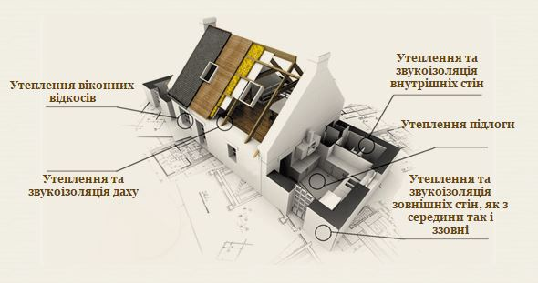
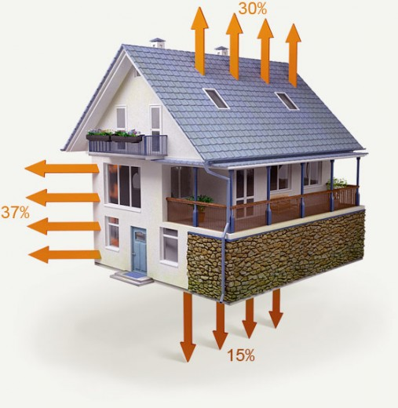

Про нас

Переваги утеплення фасадів будинків:
- - Створення термоізоляції для збереження тепла будинку;
- - Економія електроенергії завдяки підвищенню термоізоляції стін;
- - Захист стін від промерзання, відтавання, впливу вологи і інших явищ навколишнього середовища;
- - Поліпшення звукоізоляції в будинку;
- - Захист від протягів;
- - Істотне зниження витрат на опалення в зимовий період і кондиціонування приміщення влітку - економія понад 50%;
- - Роботи з утеплення фасаду продовжують термін служби несучих стін будівлі і самого фасаду;
- - У роботі з утеплення використовуються матеріали, які нешкідливі для людського здоров'я.
Послуги
Переваги утеплення фасадів будинків:
- - Створення термоізоляції для збереження тепла будинку;
- - Економія електроенергії завдяки підвищенню термоізоляції стін;
- - Захист стін від промерзання, відтавання, впливу вологи і інших явищ навколишнього середовища;
- - Поліпшення звукоізоляції в будинку;
- - Захист від протягів;
- - Істотне зниження витрат на опалення в зимовий період і кондиціонування приміщення влітку - економія понад 50%;
- - Роботи з утеплення фасаду продовжують термін служби несучих стін будівлі і самого фасаду;
- - У роботі з утеплення використовуються матеріали, які нешкідливі для людського здоров'я.
Контакти
Адрес
м. Івано-Франківськ вул. Бельведерська 46
Телефони
+38 (050) 12-34-567
+38 (050) 12-34-567
+38 (050) 12-34-567
+38 (050) 12-34-567
fasad-dah@ukr.net